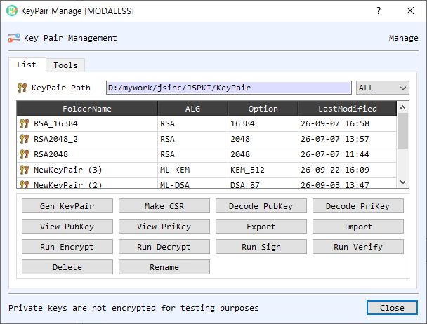

KeyPairMan Dialog Guide
The Key Pair Management dialog stores, selects, inspects, and uses asymmetric key pairs in BerEditor's KeyPairMan. A key pair is shown with its algorithm, parameter set, and modification time.

Figure 1. KeyPairMan on the List tab. Select a key-pair row to perform an action on that key.
Screen Areas
- List / Tools tabs — List manages stored key pairs. Tools works with private keys, public keys, encrypted private keys, private-key information, and certificate signing requests (CSRs).
- KeyPair Path — Shows the configured KeyPairMan storage folder. The adjacent filter limits listed key pairs by algorithm or shows All.
- Key-pair table — Lists stored pairs by folder name, algorithm, option/parameter, and last-modified time. Select a row before using the action buttons.
- Gen KeyPair / Import — Generate a new pair or import key material into KeyPairMan.
- View PubKey / View PriKey — Inspect the selected pair's public or private key. Private key material is sensitive.
- Decode PubKey / Decode PriKey — Decode the selected key in BerEditor's main window.
- Run Encrypt / Run Decrypt / Run Sign / Run Verify — Open the corresponding operation using the selected key material.
- Make CSR — Create a certificate signing request using the selected key pair.
- Export / Delete / Rename — Export the selected pair, remove it from KeyPairMan, or change its name.
- Tools tab controls — Load private/public key files, inspect or decode them, check that a pair matches, create a CSR, save a pair to the list, and encrypt/decrypt a private key. The private-key encryption mode and password are set in this tab.
- Save as DER — Select DER output for supported export/save operations in the Tools tab.
- OK / Close — OK confirms selection when the dialog is being used to choose a key pair. Close dismisses the manager.
Manage Key Pairs
- Open the List tab and select a row, or choose Gen KeyPair or Import to add key material.
- Use View, Decode, or Make CSR to inspect or prepare the selected pair.
- Use the Run buttons to launch encryption, decryption, signing, or verification with the selected key.
- Use Export, Rename, or Delete as needed. Deleting removes the stored key-pair entry from KeyPairMan.
Use the Tools Tab
- Open Tools and use Find beside the private-key or public-key field to select files. The V, D, and T controls view, decode, or identify key data where available.
- Select Check KeyPair to confirm the public and private keys correspond.
- Select Make CSR to create a request from the key pair, then inspect or decode the CSR as needed.
- Select Save to List to add the pair to KeyPairMan.
- To protect or unlock a private key, provide an encrypted private-key file or key, choose an encryption mode and password, then use Encrypt PrivateKey or Decrypt PrivateKey.
Notes
- The dialog displays a notice that private keys in KeyPairMan are not encrypted for testing purposes. Protect the storage directory and exported key files accordingly.
- Run operations require a compatible key type and the appropriate public or private key component.
- KeyPairMan paths are configured in BerEditor settings; the path shown in the dialog identifies the active store.